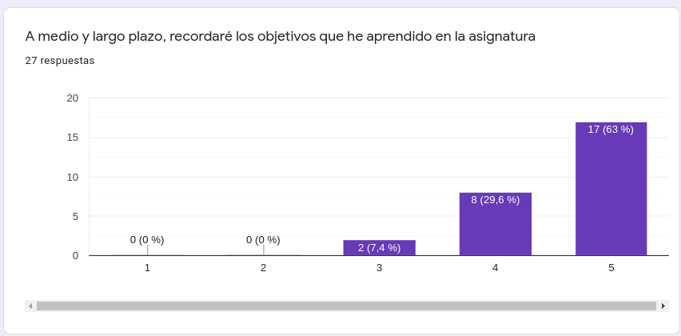

Chatbots en educación: práctica
IX convocatoria de actividades de formación
docente en centros, titulaciones y
departamentos
Sobre mi
34 años en la UGR.
Clases en Informática, Telecos, máster,
doctorado... Cursos de verano, Platzi...
Padre de tres hijas en edad
universitaria
Objetivos de aprendizaje
① Comprender los procesos básicos de
enseñanza/aprendizaje
② Deconstruir el acto de evaluación y sus
alternativas
③ Conocer diferentes metodologías de
impartición
④ Usar herramientas para evaluación (y
mejora) del desempeño propio.
Ayudar al estudiante a adquirir competencias
Un objetivo de aprendizaje es
una competencia o habilidad
concreta
que el estudiante debe
adquirir
¿Qué tipo de competencias hay?
Saber hacer, entender, completar, organizar...
Muy pocas son "recordar"
Actividad ①
Identificar las competencias de las
asignaturas que se estén impartiendo
¿Qué contiene los contenidos que se imparten?
¿Se ajustan los contenidos a los objetivos de
aprendizaje?
¿Hay una revisión continua de los contenidos en
función de los resultados?
¿Tienen los estudiantes una forma sencilla de
colaborar/coelaborar esos contenidos?
¿Qué es evaluar? ①
Dilucidar qué objetivos de
aprendizaje se han alcanzado
También una oportunidad para el
aprendizaje
¿Es la corrección al examen/trabajo
algo más que una nota?
¿Cuándo se dan los resultados de la
evaluación?
¿Se acaba la posibilidad de
aprender en el examen?
¿Quién evalúa al evaluador?
Una evaluación es retroalimentación de
nuestro desempeño
La evaluación siempre es
mutua
Los resultados dicen cómo has
ayudado a los estudiantes a aprender
Actividad ①
¿Cómo evaluamos los diferentes tipos de objetivos de
aprendizaje que hemos escrito anteriormente en la
pizarra?
Benjamin Franklin dijo
Dime y lo olvido, enséñame y lo
recuerdo, involúcrame y lo aprendo
Para que el estudiante se involucre...
Enseñanza basada en proyecto
Los estudiantes desarrollan un proyecto propio
a lo largo del curso
Solos o en equipo
El proyecto debe ir cubriendo los objetivos de
aprendizaje
Y evaluándose de forma
continua
Los proyectos tienen entregables
Esos hitos se van
entregando a lo largo del curso
El proyecto
Desarrolla la confianza en sí mismo
del estudiante
Reduce la posibilidad de
plagio
Permite un seguimiento
personalizado del estudiante
El proyecto se puede vender/presentar al
final
Competencias "horizontales":
capacidad de presentación
Posibilidades de colaboración entre
asignaturas/cursos
Colaboración entre
asignaturas/departamentos, ese animal
mitológico
Pero sobre todo...
Permite una evaluación no
memorística y basada en los objetivos de
aprendizaje.
Actividad ②
Proponer en Google Classroom un proyecto que cubra
todos o parte de los objetivos de aprendizaje de una o
varias asignaturas
Clase invertida
Alternativa a la clase
magistral
Esencialmente, no des la
chapa
Flipped class "clásica"
Material preparado con antelación,
vídeo
Clase sólo para
preguntas
Clase invertida moderna
No des la chapa más de lo
estrictamente necesario
Explicaciones bajo demanda
Interacción directa con estudiante
o grupos de estudiantes
Observación de la metodología de
trabajo del estudiante
Muy bien adaptada a ABP
Se va siguiendo el progreso del
estudiante en las diferentes etapas
Cada interacción con el estudiante es
formativa
Y también evaluativa
Actividad
Reflexionar sobre malas experiencias con clases magistral
Convertir cada evaluación en una posibilidad de
aprendizaje
Eliminación de las notas
Se busca superación de
objetivos
La evaluación indica qué hace falta
para superar el objetivo
Se trabaja hasta que se supera el objetivo
Bien adaptado a ABP
Ciclo envío → retroalimentación
hasta que se supera el objetivo
No hay límite en las entregas ni en el número
de envíos
Permite un seguimiento muy estrecho del
estudiante
Y una mejor superación de los
objetivos de aprendizaje.
Diferencia entre objetivos deseados y
obtenidos

Transparencia en las calificaciones
Liberación cuando se han
alcanzado los objetivos mínimos
Ayuda a alcanzar los objetivos de
aprendizaje
Actividad ③
Dividir el proyecto en subobjetivos
(relacionados con los de la asignatura) en Google
Classroom
Learning analytics: cualquier análisis
numérico del proceso
enseñanza/aprendizaje
¿Qué ha aprendido el estudiante?
Extraídos de
Encuestas al estudiante
Datos de la plataforma LMS
Examinar percepción del estudiante
O el valor añadido por la asignatura

¿Cuanto se tarda en alcanzar los
objetivos?
Autoevaluación de esta actividad
Contestad
Actividad ④
Proponer diferentes formas de
mejorar el proceso de enseñanza/aprendizaje mediante
analítica
{kind=link}